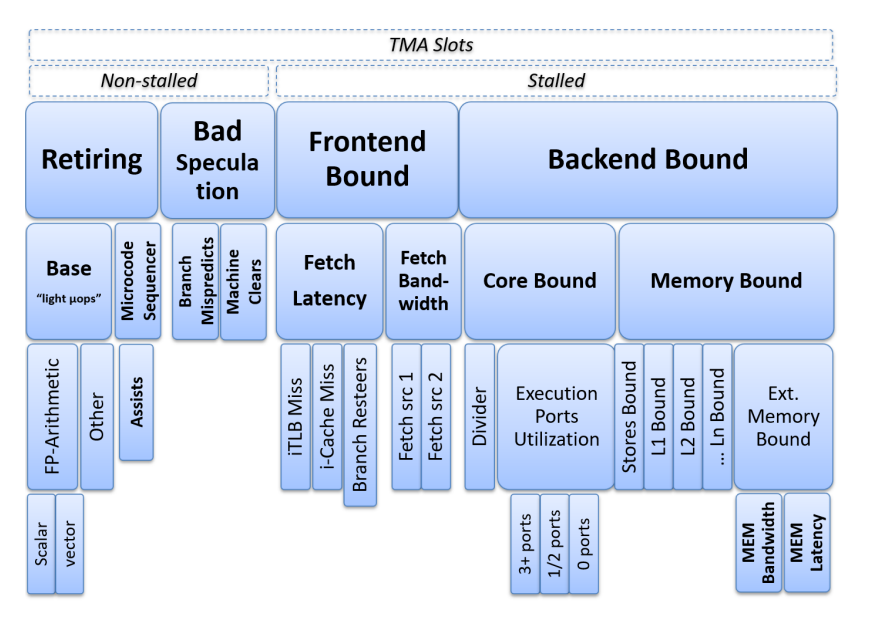
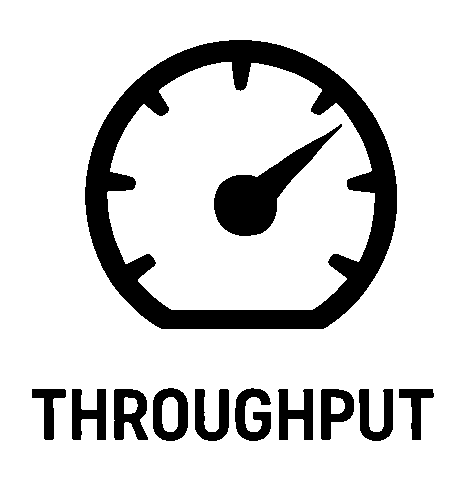
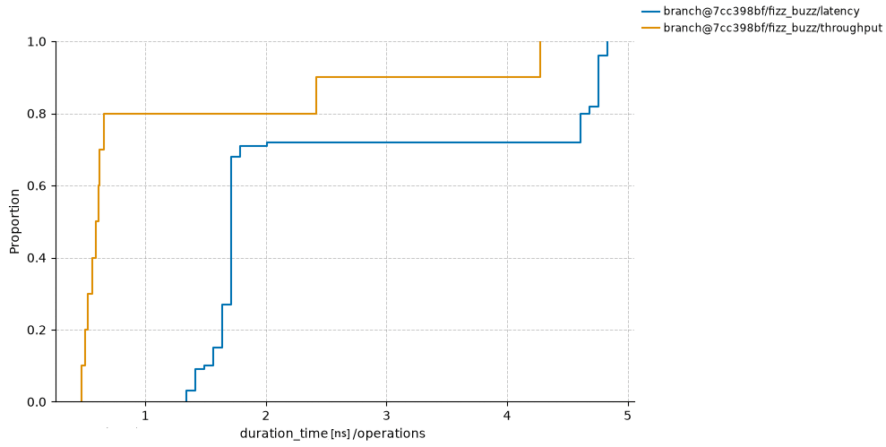

<!doctype html>
<html lang="en">
  <head>
    <meta charset="utf-8">
    <meta name="viewport" content="width=device-width, initial-scale=1.0, maximum-scale=1.0, user-scalable=no">

    <title>If You Can't Measure It, You Can't Improve It</title>

    <link rel="stylesheet" href="reveal.js/css/reveal.css">
    <link rel="stylesheet" href="reveal.js/css/theme/white.css" id="theme">
    <link rel="stylesheet" href="extensions/plugin/line-numbers/line-numbers.css">
    <link rel="stylesheet" href="extensions/css/highlight-styles/default.css">
    <link rel="stylesheet" href="extensions/css/custom.css">

    <style>
      .reveal h1, .reveal h2, .reveal h3, .reveal h4, .reveal h5 { text-transform: none; }
    </style>

    <script>
      var link = document.createElement( 'link' );
      link.rel = 'stylesheet';
      link.type = 'text/css';
      link.href = window.location.search.match( /print-pdf/gi ) ? 'reveal.js/css/print/pdf.css' : 'reveal.js/css/print/paper.css';
      document.getElementsByTagName( 'head' )[0].appendChild( link );

      function set_address(self, remote, local) {
        if (window.location.search.match("local")) {
          self.href = local;
        } else {
          self.href = remote;
        }
      }
    </script>

    <meta name="apple-mobile-web-app-capable" content="yes">
    <meta name="apple-mobile-web-app-status-bar-style" content="black-translucent">
  </head>

  <body>
    <div class="reveal">
      <div class="slides">

          <section data-markdown=""
                   data-separator="^====+$"
                   data-separator-vertical="^----+$">
          <script type="text/template">
## Nanosecond count
<!-- .element: style="text-align:left" -->

----

##### What affects performance?
<!-- .element: style="text-align:left;" -->

```cpp
 Adding a 'try/catch' that never throws?
 Adding a 'branch' that is never taken?
 Adding an 'unused function'?
```
<!-- .element: class="fragment" -->

```cpp
 Removing 'dead code'?
 Enabling 'debug symbols' in an optimized build?
```
<!-- .element: class="fragment" -->

```cpp
 Running with 'instrumentation, tracing, profiling' enabled?
 Running as a 'different user'?
 ...
```
<!-- .element: class="fragment" -->

```cpp
 What if data distribution changes?
 What if caches won’t be as hot?
 What if branches won’t be as predictable?
 What if the environment has more jitter?
 What if the code/data layout changes?
 What if ...?
 ...
```
<!-- .element: class="fragment" -->

Does it matter, and if so, why and how much?
<!-- .element: style="text-align:right; font-size:22px;" -->

----

### Hardware effects
<!-- .element: style="text-align:left" -->

[Producing Wrong Data Without Doing Anything Obviously Wrong](https://users.cs.northwestern.edu/~robby/courses/322-2013-spring/mytkowicz-wrong-data.pdf)
<!-- .element: style="text-align:left; font-size:20px;" -->
----

```sh
Code                       Assembly             Address Encoding             Comments
```
<!-- .element: style="text-align:left; font-size:16px;" -->

<p align="left">


</p>

```cpp
void unused(int);                               401080                       // layout (.text)

void func(int value) {     push rbp             401100  55                   // align (16b), icache
  int var = ...;           mov rbp,rsp          401101  48 89 e5             // stack (frame)
  for (...) {              nop                  401104  66 0f 1f 44 00 00    // alignment
    int i = table[value];  mov eax,[rdi*4+0x20] 40110a  8B 04 BD 00 20 40 00 // data cache
    if (i == var) {        cmp eax,ecx          401111  39 c8
      ...                  je 0x40111d          401113  74 08                // branch predictor
  }                        pop rbp              401115  5d                   // stack (unwind)
}                          ret                  401116  c3

table:                                          402000                       // layout (.rodata)
 .long 42                                       402000  20 00 00 00
 .long 123                                      402004  41 01 00 00
                              ...
```
<!-- .element: style="text-align:left; font-size:16px;" -->

----

##### Top-Down Microarchitecture Analysis Method [[Intel](https://rcs.uwaterloo.ca/~ali/cs854-f23/papers/topdown.pdf), [AMD](https://docs.amd.com/r/en-US/57368-uProf-user-guide/7.9.-Micro-Architecture-Analysis), [ARM](https://support.arm.com/documentation/109542/02/Arm-Topdown-methodology), ...]
<!-- .element: style="text-align:left; font-size: 32px;" -->

<p align="left">

</p>

----

##### `Latency vs Throughput`
<!-- .element: style="text-align:left" -->

<table>
<tr>
<td>

</td>
<td>
<pre><code style="width:760px">Latency
 ├─ Time it takes for a single operation to complete
 ├─ ns/op
 └─ func()
</code></pre>
</td>
</tr>
</table>

<table>
<tr>
<td>

</td>
<td>
<pre><code style="width:760px">Throughput
 ├─ Total number of operations
 ├  completed in a given amount of time
 ├─ ops/s, Gb/s, ...
 ├─ ns/ops - reciprocal (inverse) throughput
 └─ for (...) {
      func()
    }
</code></pre>
</td>
</tr>
</table>

<!--<p align="left">-->
<!---->
<!--</p>-->

----

##### `Cache`
<!-- .element: style="text-align:left;" -->

```cpp
mov rax, [rdi]
```

https://www.akkadia.org/drepper/cpumemory.pdf
<!-- .element: style="text-align:left; font-size:22px;" -->

----

##### Cache-line eviction
<!-- .element: style="text-align:left; " -->

```cpp
enum class Level { L1, L2, L3, DRAM };           // data-cache
```
<!-- .element: style="text-align:left; font-size:17px;" -->

```cpp
auto refresh(const void* addr, const auto level) {
    assert(addr);
    if constexpr (level == Level::L1) {
        load(addr);                              // L1
        fence();
    } else if constexpr (level == Level::L2) {
        flush(addr);                             // DRAM
        fence();
        prefetch<Level>(addr);                   // PREFETCHT1 hint
    } else if constexpr (level == Level::L3) {
        load(addr);                              // L1
        fence();
        demote(addr);                            // CLDEMOTE hint
    } else {
        flush(addr);                             // DRAM
        fence();
    }
    settle();
}
```
<!-- .element: style="text-align:left; font-size:17px;" -->

```asm
PREFETCHNTA  Non-temporal
PREFETCHT0   Hint into all cache levels (L1 priority)
PREFETCHT1   Hint into L2/L3, lower L1 priority
PREFETCHT2   Hint into L2/L3 with even lower urgency
CLFLUSH{OPT} Flush Cache Line
CLDEMOTE     Hint into more distant level (Sapphire Rapids+)
```
<!-- .element: style="text-align:left; font-size:13px; margin: 0 0;" -->

https://www.intel.com/content/www/us/en/developer/articles/technical/intel-sdm.html
<!-- .element: style="text-align:left; font-size:16px;" -->

----

#### "The Worst" Possible Execution / p99
<!-- .element: style="text-align:left;" -->

```json
{
    "code": {
        "align": "unaligned",
    },
    "stack": {
        "align": "unaligned"
    },
    "func": {
        "align": "unaligned",
        "order": "as-is"
    },
    "dcache": {
        "L1":   {"hit_rate": 0},
        "L2":   {"hit_rate": 0},
        "L3":   {"hit_rate": 0},
        "DRAM": {"hit_rate": 100},
    },
    "icache": {"hit_rate": 0},
    "itlb":   {"hit_rate": 0},
    "dtlb":   {"hit_rate": 0},
    "branch": "unpredictable"
}
```
<!-- .element: style="text-align:left; font-size:18px;" -->

----

#### `perf cycle(s)`
<!-- .element: style="text-align:left" -->

```cpp
→ profile → benchmark → analyze → optimize ↻
```

----

#### Further readings
<!-- .element: style="text-align:left;" -->

##### - Intel - https://www.intel.com/content/www/us/en/developer/articles/technical/intel-sdm.html
<!-- .element: style="text-align:left; margin: 5px 0; font-size:22px" -->
##### - AMD - https://docs.amd.com/v/u/en-US/40332-PUB_4.08
<!-- .element: style="text-align:left; margin: 5px 0; font-size:22px" -->
##### - ARM - https://developer.arm.com/documentation/ddi0487/latest
<!-- .element: style="text-align:left; margin: 5px 0; font-size:22px" -->
##### - Apple - https://developer.apple.com/documentation/apple-silicon/cpu-optimization-guide
<!-- .element: style="text-align:left; margin: 5px 0; font-size:22px" -->

---

#### - Citadel Securities - https://citadelsecurities.com/careers/engineering
<!-- .element: style="text-align:left; margin: 5px 0; font-size:24px" -->
          </script>
        </section>
      </div>
    </div>

    <script src="reveal.js/js/reveal.js"></script>

    <script>

      // Full list of configuration options available at:
      // https://github.com/hakimel/reveal.js#configuration
      Reveal.initialize({

        // Display controls in the bottom right corner
        controls: true,

        // Display a presentation progress bar
        progress: false,

        // Display the page number of the current slide
        slideNumber: 'c',

        // Push each slide change to the browser history
        history: true,

        // Enable keyboard shortcuts for navigation
        keyboard: true,

        // Enable the slide overview mode
        overview: false,

        // Vertical centering of slides
        center: true,

        // Enables touch navigation on devices with touch input
        touch: true,

        // Loop the presentation
        loop: false,

        // Change the presentation direction to be RTL
        rtl: false,

        // Turns fragments on and off globally
        fragments: true,

        // Flags if the presentation is running in an embedded mode,
        // i.e. contained within a limited portion of the screen
        embedded: false,

        // Flags if we should show a help overlay when the questionmark
        // key is pressed
        help: false,

        // Flags if speaker notes should be visible to all viewers
        showNotes: false,

        // Number of milliseconds between automatically proceeding to the
        // next slide, disabled when set to 0, this value can be overwritten
        // by using a data-autoslide attribute on your slides
        autoSlide: 0,

        // Stop auto-sliding after user input
        autoSlideStoppable: true,

        // Enable slide navigation via mouse wheel
        mouseWheel: false,

        // Hides the address bar on mobile devices
        hideAddressBar: true,

        // Opens links in an iframe preview overlay
        previewLinks: false,

        // Transition style
        transition: 'none', // none/fade/slide/convex/concave/zoom

        // Transition speed
        transitionSpeed: 'default', // default/fast/slow

        // Transition style for full page slide backgrounds
        backgroundTransition: 'none', // none/fade/slide/convex/concave/zoom

        // Number of slides away from the current that are visible
        viewDistance: 1,

        // Parallax background image
        parallaxBackgroundImage: '', // e.g. "'https://s3.amazonaws.com/hakim-static/reveal-js/reveal-parallax-1.jpg'"

        // Parallax background size
        parallaxBackgroundSize: '', // CSS syntax, e.g. "2100px 900px"

        // Number of pixels to move the parallax background per slide
        // - Calculated automatically unless specified
        // - Set to 0 to disable movement along an axis
        parallaxBackgroundHorizontal: null,
        parallaxBackgroundVertical: null,

        // Optional reveal.js plugins
        dependencies: [
          { src: 'reveal.js/lib/js/classList.js', condition: function() { return !document.body.classList; } },
          { src: 'reveal.js/plugin/markdown/marked.js', condition: function() { return !!document.querySelector( '[data-markdown]' ); } },
          { src: 'reveal.js/plugin/markdown/markdown.js', condition: function() { return !!document.querySelector( '[data-markdown]' ); } },
          { src: 'reveal.js/plugin/highlight/highlight.js', async: true, callback: function() { hljs.initHighlightingOnLoad(); } },
          { src: 'reveal.js/plugin/zoom-js/zoom.js', async: true },
          { src: 'reveal.js/plugin/notes/notes.js', async: true },
          { src: 'extensions/plugin/line-numbers/line-numbers.js' }
        ]
      });

      function handleClick(e) {
        if (1 >= outerHeight - innerHeight) {
          document.querySelector( '.reveal' ).style.cursor = 'none';
        } else {
          document.querySelector( '.reveal' ).style.cursor = '';
        }

        e.preventDefault();
        if(e.button === 0) Reveal.next();
        if(e.button === 2) Reveal.prev();
      }
    </script>

  </body>
</html>
